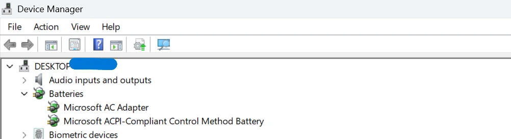
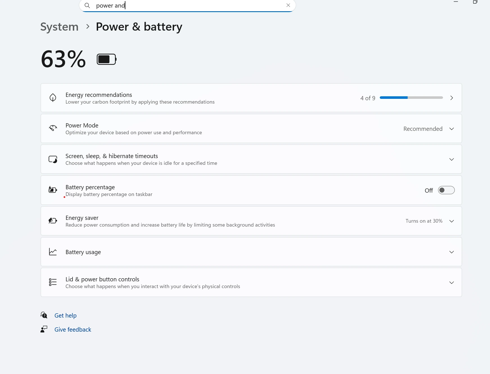

Charging problem guide
Laptop Battery Not Charging
If your laptop says “plugged in, not charging,” charges only sometimes, or stops climbing past a certain percentage, the cause can be anything from a simple adapter issue to battery wear or a charging port problem.
This guide walks through the checks that are actually worth doing before you assume the battery is dead. The goal is to rule out cable, charger, driver, and Windows issues first, then decide when repair or replacement is more realistic.
Charging status
Why your laptop says plugged in but not charging
That message often appears when the laptop detects power but chooses not to charge normally. Some models pause charging because of battery protection limits, some react to weak or incorrect chargers, and others show it because Windows or the battery controller needs to refresh.
It can also happen when the battery is badly worn and no longer responds normally to charging.
If you are seeing the exact Windows status message and want a more focused guide for that scenario, read Laptop Plugged In, Not Charging.
Start here
Basic checks
- Restart the laptop. This clears temporary charging logic or driver glitches.
- Check the battery percentage carefully. Some laptops stop charging on purpose around 80% to reduce wear.
- Shut down and reconnect power. Fully power off the laptop, unplug the charger, reconnect it, and start again.
- Watch for flickering charging status. If the icon changes repeatedly, the cable, adapter, or port may be loose.
Power hardware
Charger and cable checks
- Make sure you are using the correct charger wattage for the laptop
- Check the charging cable for fraying, kinks, or a loose connector
- Try another wall outlet
- If possible, test with a known-good charger
- If the USB-C charging cable feels weak or generic, try a higher-quality supported one
If charging works again with another adapter, the battery may be fine and the charger was the real problem.
Windows drivers
Battery driver reset steps
- Open Device Manager.
- Expand Batteries.
- Right-click Microsoft AC Adapter and Microsoft ACPI-Compliant Control Method Battery.
- Uninstall both entries. Do not worry, Windows will reinstall them after restart.
- Restart the laptop.
This is a common Windows-side fix when the charging status is wrong but the hardware is still fine.

Windows checks
Windows power troubleshooting
Check whether your laptop maker has battery health or conservation mode enabled. Some systems intentionally stop charging at 60% or 80% to reduce wear, which can look like a fault if you do not know the setting is turned on.
If the laptop also has short runtime, use the Battery Health Check Laptop tool and the battery report guide to see whether the battery itself is already worn out.

Firmware
BIOS and firmware note
Some charging problems come from firmware behavior rather than Windows alone. If your laptop maker has a BIOS or power management update specifically related to charging or battery behavior, it may be worth reviewing after basic checks.
This is more important when the problem started right after an update, a battery replacement, or a long period of not using the laptop.
Hardware signs
When it may be a battery or charging port issue
- The charging port feels loose or only works at certain angles
- The adapter is known good, but the laptop still will not charge
- The battery report shows very poor health or severe wear
- The battery is swollen or the case looks warped
- The laptop runs very hot while trying to charge
If heat is involved too, check the Laptop Overheating Fix guide. If the main goal is reducing wear after you solve charging, the Improve Laptop Battery Life guide is the right next step.
If Windows stops seeing the battery completely instead of just failing to charge it, the next page to read is Battery Not Detected on Laptop.
FAQ
Why does my laptop say plugged in but not charging?
That message can appear because of battery protection limits, a weak charger, a bad cable, battery driver issues, firmware behavior, or a battery that is starting to fail. The cause is not always the battery itself.
Can I fix a laptop battery that is not charging?
Sometimes, yes. Basic checks like reseating the charger, testing another adapter, reinstalling battery drivers, and restarting the laptop can solve the issue if it is caused by settings or driver problems.
Should I uninstall battery drivers in Device Manager?
Uninstalling the Microsoft ACPI battery entries and restarting can help Windows reload the battery drivers cleanly. It is a common troubleshooting step and usually safe when done carefully.
Can overheating stop a laptop from charging properly?
Yes. Some laptops reduce or pause charging when temperatures get too high. If the laptop is hot while charging, cooling and airflow should be checked too.
How do I know if the battery or charging port is bad?
If the charger is known good, the battery report shows very poor health, or the charging port is loose or intermittent, hardware becomes more likely. At that point, repair or battery replacement may be needed.
When should I stop troubleshooting and repair the laptop?
Stop troubleshooting when the port feels physically damaged, the battery is swollen, the adapter gets unusually hot, or software steps do not change anything. Those are signs the problem may be hardware-related.